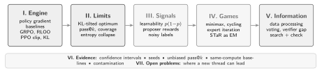

This series collects the theory behind Challenger–Solver self-play, where one model writes its own problems, solves them, and judges its own answers. Every topic comes with a definition, a short derivation, a worked example with real numbers, and the reason it matters for self-play.

The seven parts of the series.
| \(x\) | problem (prompt) | \(\pi_\theta(y\mid x)\) | Solver policy |
| \(y\) | full response, ending in an answer | \(\pi_{\mathrm{ref}}\) | frozen reference (base) model |
| \(z\) | reasoning trace (rationale) | \(R(x,y)\) | reward, usually in \(\{0,1\}\) |
| \(p(x)\) | Solver’s success probability on \(x\) | \(G\) | samples per problem (group size) |
| \(\hat A_i\) | advantage of sample \(i\) | \(\beta,\ \varepsilon\) | KL weight, clip range |
| \(\hat p\) | agreement with the majority answer | \(k\) | sample budget in pass@\(k\) |
1 LLM generation as reinforcement learning
A problem \(x\) is the state and the whole response \(y\) is the action; a verifier, or a pseudo-label in self-play, returns one scalar reward at the end. This bandit view is the one used by GRPO, R-Zero and SOAR. The policy factorizes over tokens: \[\begin{gathered}\pi_\theta(y\mid x)=\prod_{t=1}^{|y|}\pi_\theta(y_t\mid x,y_{<t}), \\[4pt] J(\theta)=\mathbb{E}_{x\sim\mathcal D}\,\mathbb{E}_{y\sim\pi_\theta(\cdot\mid x)}\big[R(x,y)\big].\end{gathered}\] With a binary reward, \(J(\theta)=\mathbb{E}_x[p_\theta(x)]\): training maximizes the average success probability.
2 The policy gradient
\[\begin{gathered}\nabla_\theta J(\theta)=\mathbb{E}_{x,\;y\sim\pi_\theta}\Big[R(x,y)\,\nabla_\theta\log\pi_\theta(y\mid x)\Big], \\[4pt] \nabla_\theta\log\pi_\theta(y\mid x)=\sum_{t}\nabla_\theta\log\pi_\theta(y_t\mid x,y_{<t}).\end{gathered}\]
Derivation. For a fixed \(x\), \[\nabla_\theta\sum_y \pi_\theta(y\mid x)R(x,y)=\sum_y \pi_\theta(y\mid x)\,R(x,y)\,\frac{\nabla_\theta\pi_\theta(y\mid x)}{\pi_\theta(y\mid x)}=\mathbb{E}_{y\sim\pi_\theta}\!\big[R\,\nabla_\theta\log\pi_\theta(y\mid x)\big].\] The expectation can be estimated from samples, so we never need the sum over all responses.
Every method in this guide (PPO, GRPO, RLOO, R-Zero, Absolute Zero, SOAR) estimates this one expectation. They differ only in how they weight each sample, and in where \(R\) comes from.
3 Baselines and advantages
For any \(b(x)\) that does not depend on the sampled \(y\): \[\mathbb{E}_{y\sim\pi_\theta}\big[b(x)\,\nabla_\theta\log\pi_\theta(y\mid x)\big]=b(x)\sum_y\nabla_\theta\pi_\theta(y\mid x)=b(x)\,\nabla_\theta\!\sum_y\pi_\theta(y\mid x)=b(x)\,\nabla_\theta 1=0,\] so \(\nabla_\theta J=\mathbb{E}\big[(R-b(x))\,\nabla_\theta\log\pi_\theta\big]\). The term \(\hat A=R-b\) is the advantage. A good baseline, close to \(\mathbb{E}[R\mid x]\), lowers the variance a lot.
Four samples get rewards \((1,1,1,0)\). Without a baseline, the three correct samples are pushed up by \(1\) and the wrong one gets weight \(0\): it is never pushed down. With \(b=0.75\) the weights become \((+0.25,+0.25,+0.25,-0.75)\). Now the single failure carries the largest signal, which is what we want on an easy problem.
A baseline that uses the sample’s own reward, such as the group mean including \(R_i\), is no longer independent of \(y_i\). The leave-one-out baseline below fixes this.
4 Group-relative advantages: GRPO and RLOO
Sample \(G\) responses for one problem. The advantage of response \(i\), shared by all its tokens, is \[\hat A_i=\frac{R_i-\operatorname{mean}(R_1,\dots,R_G)}{\operatorname{std}(R_1,\dots,R_G)+\epsilon_{\mathrm{std}}} .\] The loss combines a PPO-style clipped ratio (Section 5) with a KL penalty to \(\pi_{\mathrm{ref}}\): \[\mathcal J_{\mathrm{GRPO}}=\mathbb{E}\Bigg[\frac1G\sum_{i=1}^G\frac1{|y_i|}\sum_{t}\min\!\Big(\rho_{i,t}\hat A_i,\ \operatorname{clip}(\rho_{i,t},1-\varepsilon,1+\varepsilon)\hat A_i\Big)\Bigg]-\beta\,D_{\mathrm{KL}}(\pi_\theta\,\|\,\pi_{\mathrm{ref}}).\]
\[\hat A_i=R_i-\frac{1}{G-1}\sum_{j\neq i}R_j .\] The baseline uses only the other samples, so it is independent of \(y_i\) and the estimator is unbiased.
\(\displaystyle R_i-\frac{1}{G-1}\sum_{j\neq i}R_j=\frac{G R_i-\sum_j R_j}{G-1}=\frac{G}{G-1}\Big(R_i-\operatorname{mean}_j R_j\Big).\) Mean-centering is RLOO times the constant \((G-1)/G\): the direction is unbiased and only the scale changes. GRPO’s real difference is the division by the standard deviation.
Rewards \((1,0,0,0)\). Mean \(0.25\); standard deviation \(\sqrt{0.25\cdot0.75}=0.433\). GRPO: \(\hat A=(+1.73,\,-0.58,\,-0.58,\,-0.58)\). RLOO: \(\hat A=(1-0,\ 0-\tfrac13,\ 0-\tfrac13,\ 0-\tfrac13)=(+1,\,-0.33,\,-0.33,\,-0.33)\), which is exactly \(\tfrac43\times(0.75,-0.25,-0.25,-0.25)\).
Three traps hide in this formula.
If all \(G\) rewards are equal, every advantage is \(0\) and the problem teaches nothing. DAPO’s dynamic sampling drops such groups (Yu et al., 2025).
With binary rewards \(\operatorname{std}=\sqrt{p(1-p)}\), so dividing by it multiplies a problem’s weight by \(1/\sqrt{p(1-p)}\) compared with plain mean-centering. This up-weights problems that are almost always or almost never solved.
The factor \(1/|y_i|\) makes each token of a long wrong answer cost less, so the policy drifts toward longer wrong answers. Dr. GRPO removes both normalizations (Liu et al., 2025).
5 Trust regions: PPO clipping and the KL penalty
With the per-token ratio \(\rho_t=\pi_\theta(y_t\mid x,y_{<t})/\pi_{\mathrm{old}}(y_t\mid x,y_{<t})\), \[L^{\mathrm{CLIP}}=\mathbb{E}\Big[\min\big(\rho_t\hat A,\ \operatorname{clip}(\rho_t,1-\varepsilon,1+\varepsilon)\,\hat A\big)\Big].\]
Take \(\varepsilon=0.2\). If \(\hat A=+1\) and a token’s probability already rose by \(30\%\) (\(\rho=1.3\)): \(\min(1.3,1.2)=1.2\), a constant, so the gradient is zero and the update stops pushing that token. If \(\hat A=-1\) and \(\rho=0.7\): \(\min(-0.7,-0.8)=-0.8\), again constant. Clipping keeps each update inside a small trust region around \(\pi_{\mathrm{old}}\).
The KL term. GRPO estimates \(D_{\mathrm{KL}}(\pi_\theta\|\pi_{\mathrm{ref}})\) per token with \(k_3=r-1-\log r\), where \(r=\pi_{\mathrm{ref}}/\pi_\theta\) and the token is sampled from \(\pi_\theta\). Since \(\mathbb{E}_{\pi_\theta}[r]=1\), we get \(\mathbb{E}[k_3]=\mathbb{E}[-\log r]=D_{\mathrm{KL}}(\pi_\theta\|\pi_{\mathrm{ref}})\): the estimate is unbiased and never negative.
R-Zero keeps a KL anchor (\(\beta=0.01\)); Absolute Zero drops it. The anchor slows drift and collapse, but it also ties the policy to the base model, the very thing self-play hopes to go beyond (Section 6). Whether to anchor is a real design decision, not a detail.
Exercises
Exercise 1. Compute the GRPO advantages for rewards \((1,1,1,0)\). Which sample gets the largest weight, and why is that sensible?
Show answer
Mean \(0.75\), standard deviation \(0.433\): the correct samples get \(+0.577\) and the wrong one \(-1.732\). On an easy problem the rare failure is the most informative sample.
Exercise 2. Show that GRPO with the standard deviation removed equals RLOO up to a constant factor. What is the factor for \(G=8\)?
Show answer
Without the division, \(\hat A_i=R_i-\operatorname{mean}R=\frac{G-1}{G}\times\text{RLOO}_i\). For \(G=8\) the factor is \(7/8\).
References
- J. Schulman et al. Proximal Policy Optimization Algorithms. arXiv:1707.06347, 2017.
- Z. Shao et al. DeepSeekMath (introduces GRPO). arXiv:2402.03300, 2024.
- A. Ahmadian et al. Back to Basics: Revisiting REINFORCE Style Optimization for Learning from Human Feedback in LLMs (RLOO). arXiv:2402.14740, 2024.
- Q. Yu et al. DAPO: An Open-Source LLM Reinforcement Learning System at Scale. arXiv:2503.14476, 2025.
- Z. Liu et al. Understanding R1-Zero-Like Training: A Critical Perspective (Dr. GRPO). arXiv:2503.20783, 2025.
- A. Zhao et al. Absolute Zero: Reinforced Self-play Reasoning with Zero Data. arXiv:2505.03335, 2025.
- C. Huang et al. R-Zero: Self-Evolving Reasoning LLM from Zero Data. arXiv:2508.05004, 2025.
- S. Sundaram, J. Kempe and Y. Ollivier. Teaching Models to Teach Themselves: Reasoning at the Edge of Learnability (SOAR). arXiv:2601.18778, ICML 2026.
Citation
Cited as:
Chakma, Chandak. (Nov 2026). The RL Engine Behind LLM Reasoning. Chandak’s Notes. https://chandakchakma.github.io/notes/rl-engine.html
@article{chakma2026rlengine,
title = "The RL Engine Behind LLM Reasoning",
author = "Chakma, Chandak",
journal = "chandakchakma.github.io",
year = "2026",
month = "Nov",
url = "https://chandakchakma.github.io/notes/rl-engine.html"
}